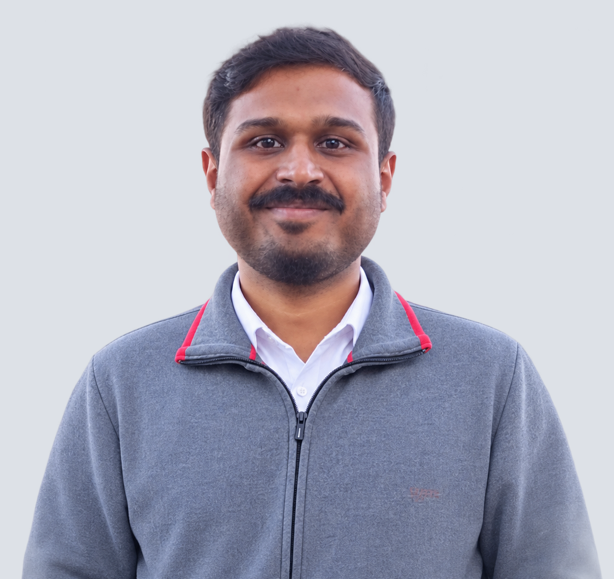

01

PhD Researcher
Abdullah
Liverpool John Moores University
Doctoral researcher investigating decision intelligence for UK freight rail operations. Abdullah's work combines real-time network data, capacity modelling, and operational analytics to support planners and operators in making faster, more defensible decisions under constraint.